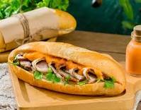

Description
Banh Mi is a Vietnamese sandwich that's made up of an odd sounding combination - crusty bread rolls smeared with pate, mayo, suspicious looking Asian ham, pickled vegetables, green onion, coriander/cilantro, a mighty wack of fresh chillies and drizzle of seasoning.
Ingredients
- Vietnamese cold cuts
- Very crusty baguettes
- Pate
- Mayo
- Pickled carrot
- Cucumber, coriander/cilantro, green onion, chilli
- Maggi Seasoning
Step
- Split the roll down the top middle (not along the side like you'd normally do)
- Smear with pate then mayo on one side (both if you're feeling super indulgent)
- Jam in the ham, cucumber strips, carrot, green onion, then lastly coriander/cilantro
- Finish with a sprinkle of chilli (go hard or go home!😂) and a little sprinkle of Maggi Seasoning (about 1/2 tsp)